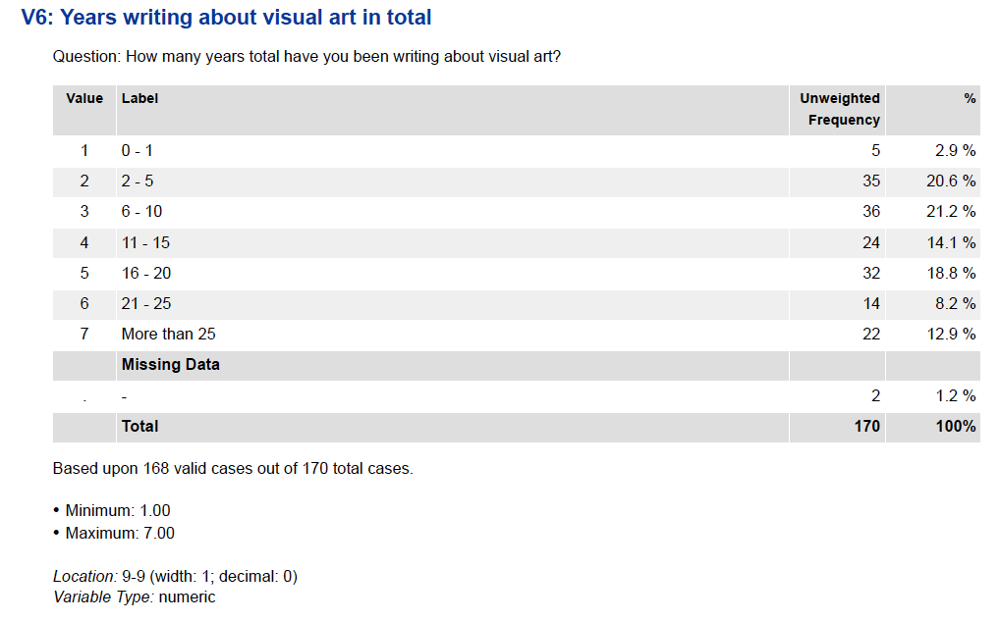

Missing data summary 1
Complete
The data is not complete. A few critics did not offer their preference to some artists. In those cases where preference is missing, we assumed the critics have “no opinion” towards the artists, and assigned a value of 0.
Coherent
The data is coherent. For the artist preference data, we remapped the original categorical data to numerical so that it makes more sense to calculate an average score to measure preference. For other attributes, we used them as categorical data. We also checked the distribution for some attributes, such as Salary, Years in Journalism, to make sure that the data has variation.

{kind=link}
{kind=link}
{kind=link}
Correct
The data is correct. We compared the data distribution within each attribute with its documentation, and we were able to verify that all data point falls within the documented range for each attribute.
Accountability
The data comes from an accountable source. The data is collected through a study conducted by the National Arts Journalism Program, which is based at Columbia University’s Graduate School of Journalism and funded by The Pew Charitable Trusts.